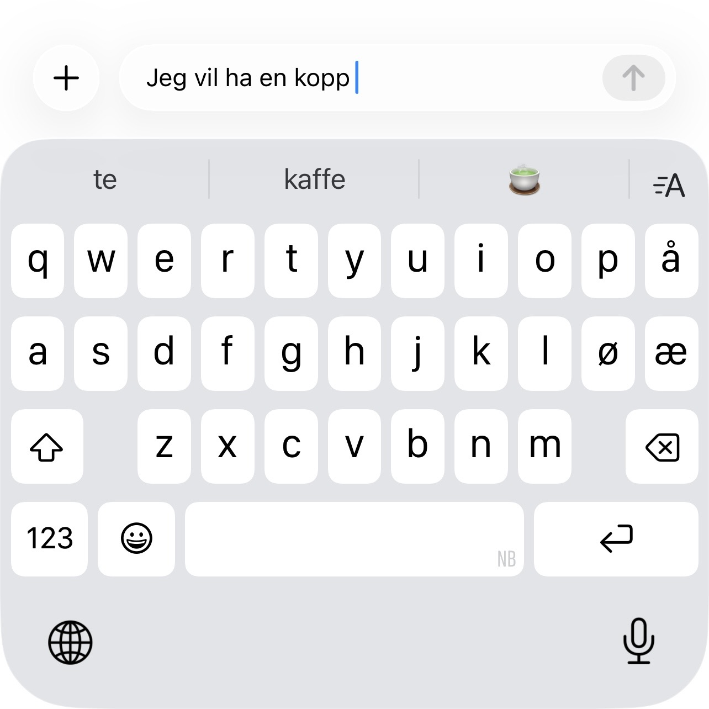
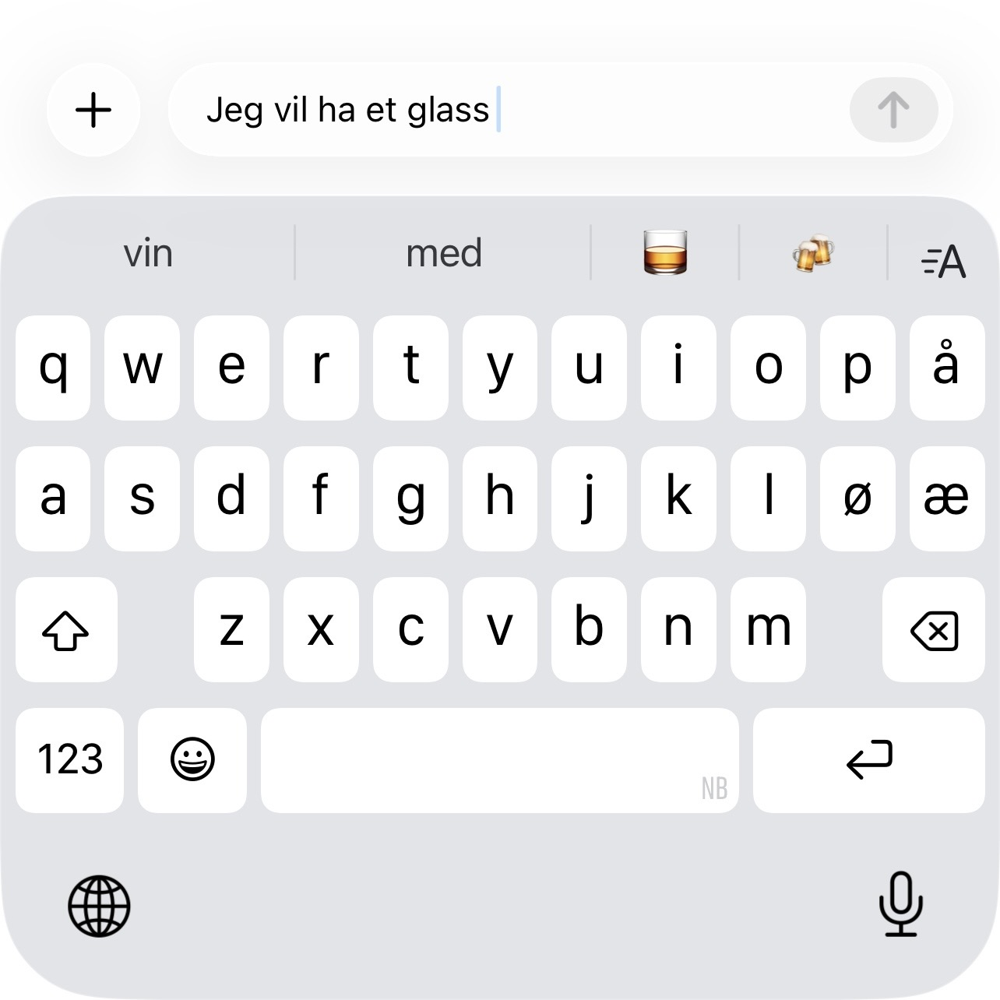

Hvordan fungerer store språkmodeller?
En type enkel språkmodell som du sikkert kjenner til, er ordboka på mobiltelefonen din. Den foreslår neste ord basert på teksten du har skrevet så langt. Modellen i telefonen er trent opp på tekster hentet fra internett, og forslagene er de mest sannsynlige ordene utfra mønstrene som modellen har lært fra tekstene. Forslaget er betinget av teksten du har skrevet, og denne teksten kalles konteksten.
 Forslag til fortsettelser av teksten “Jeg vil ha en kopp”. |
 Forslag til fortsettelser av teksten “Jeg vil ha et glass”. |
{kind=link}
{kind=link}
Store språkmodeller er mye mer avanserte enn ordboka på telefonen din, men de fungerer grunnleggende sett på samme måte. En språkmodell er en matematisk modell som bygger opp svaret ett ord av gangen, betinget av konteksten. Hvert ord trekkes med litt tilfeldighet. Modellen stopper når den “mener” svaret er fullstendig.
Hva er konteksten?
Når vi snakker om store språkmodeller, sier vi ofte at alt vi gir modellene å jobbe med, er kontekst. Konteksten kan være et spørsmål eller en instruksjon, men også dokumenter, bilder eller andre ting vi laster opp til modellen.